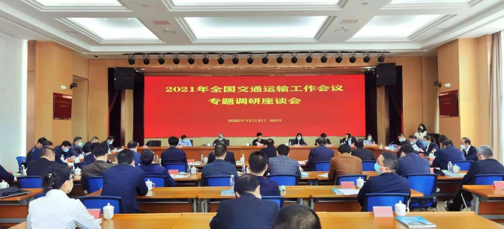
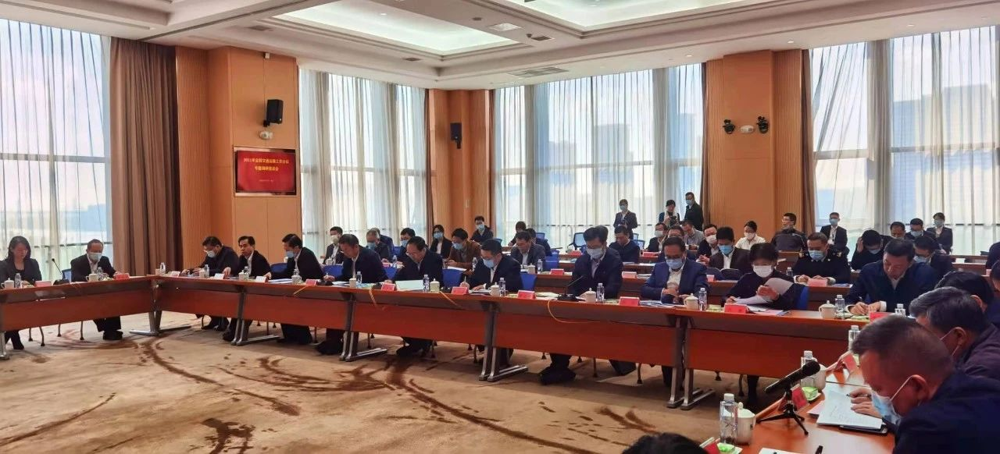

微官网
微官网
2020-12-21 中国高速公路网—21世纪公路网


12月2-3日，交通运输部党组成员、副部长刘小明带队一行数人到福建就保障物流供应链稳定畅通、支撑现代流通体系建设进行专题调研。12月3日上午，在福建港口大厦召开了2021年全国交通运输工作会议专题调研工作座谈会。省交通运输厅、省发改委、省工信厅、省商务厅、省港口集团等省直有关部门、单位负责人，相关中央驻闽单位负责人以及盛辉物流集团、福建陆地港集团等省内部分重点物流相关企业负责人参加了座谈会并相继发言。
刘小明副部长在听完各单位发言后指出，这次带领运输服务司、政研室、水运局的同志到福建开展“保障物流供应链稳定畅通、支撑现代流通体系建设”专题调研，主要目的是围绕贯彻落实习近平总书记关于物流供应链体系建设系列指示批示，准确把握“十四五”期面临的形势和挑战，坚持开门问策、集思广益，进一步统一认识、创新举措，在推动形成新发展格局中谋新篇、开新局，促进物流业高质量发展，保障物流供应链畅通稳定，更好支撑现代流通体系建设。
刘小明副部长强调，近年来，福建省交通运输、发改、工信、商务、海关等部门，以习近平新时代中国特色社会主义思想为指导，在省委省政府的坚强领导下，聚焦“基础设施、服务效能、产业支撑、应急运输”等四个重点，探索创新、持续发力，推进现代物流发展工作取得显著成效，总的来看，具有以下特点：一是综合交通运输网络不断完善，有力支撑带动物流转型升级；二是市场营商环境不断优化，有力带动物流业降本增效；三是交通物流产业集群不断壮大，为物流发展注入新动能；四是政策体系不断健全，为物流转型发展创造有力条件。
最后，刘副部长就推进物流供应链体系建设，更好服务和支撑新发展格局，提了三点重要意见。一是深刻认识“十四五”期物流供应链体系建设面临的新形势新要求；二是客观认识当前制约我国物流业高质量发展的突出短板和主要问题；三是努力开创福建物流供应链体系建设新局面。
此外，专题调研组还实地调研了厦门国际航运科创中心、京东物流、晋江陆地港和好运联联科技公司、省港口集团等单位，深入了解到在推进现代物流业发展、创新服务模式等方面的经验做法。